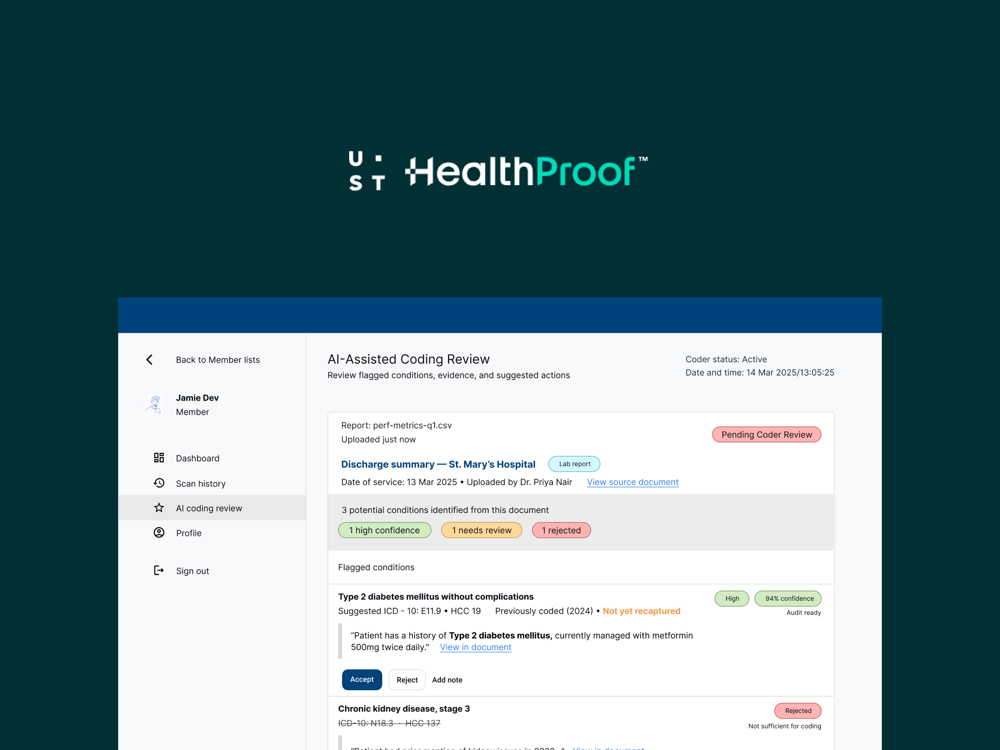

Healthcare

Designing for the gap between diagnosis and coverage
A concept feature for UST Healthproof's risk adjustment ecosystem: turning unstructured medical records into actionable diagnostic signals across four connected workflows.